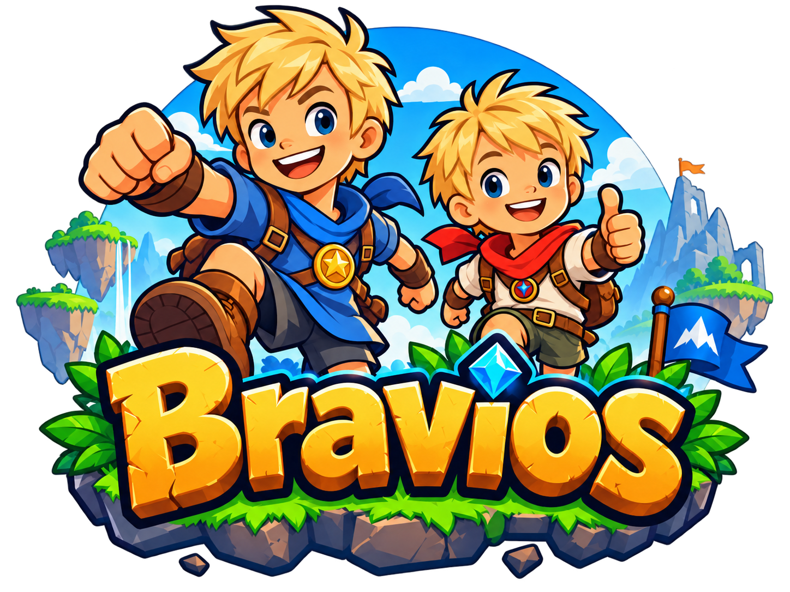
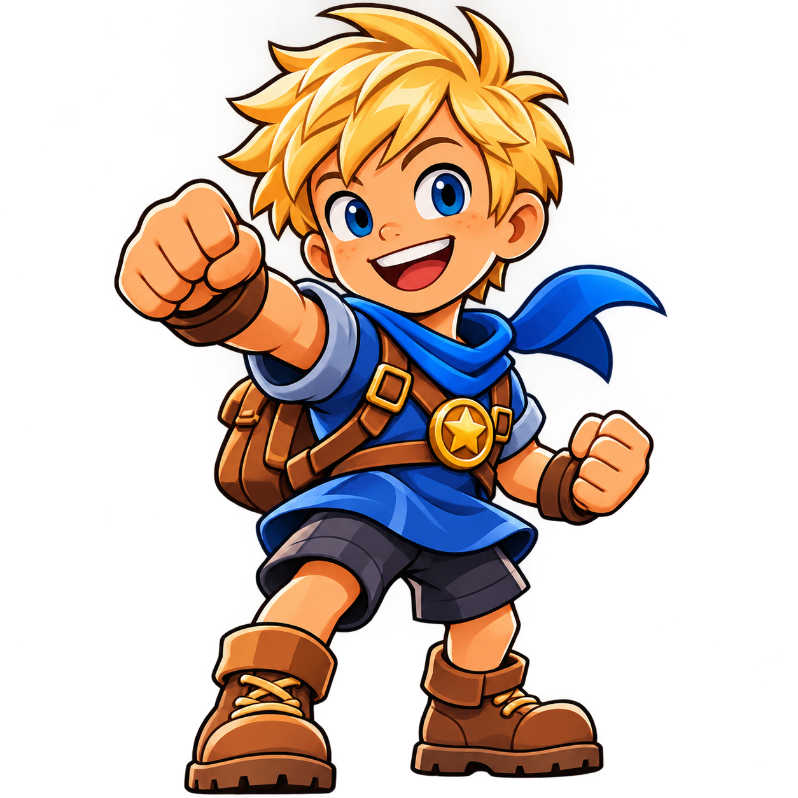
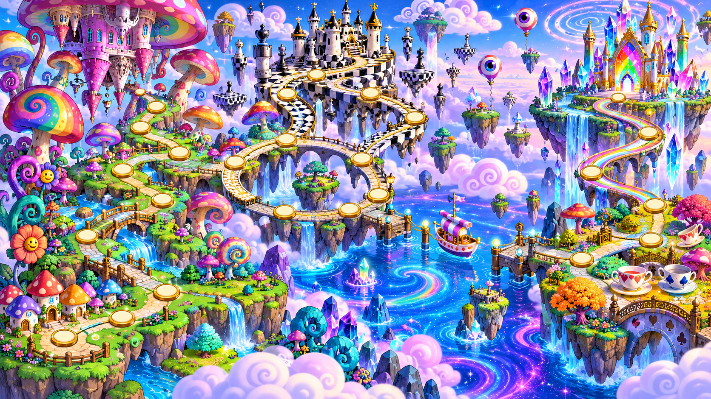
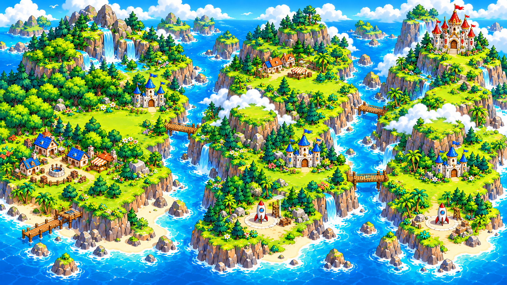

Je avontuur wordt klaargezet…

De stevige basis voor je avontuur.
Stick / richtingskruis: kiezen · A / kruisje: starten of actie · B / rondje: terug
Een grote reis, een gek veld of even een klein spelletje. Waar heb jij zin in?

Reuzenpaddenstoelen, schaakkastelen en een toverboot. Kies jouw pad!

Kastelen, maanreizen en winkels. Loop door jouw eigen wereld.
Spring, ontdek en volg de muntjes.
Buizen, vreemde werelden en alles andersom!
Ga met z’n tweeën op pad.
Mikken, ballonnen prikken en fruit vangen.
Kies een licht rondje. Bij een splitsing kies jij de route! Pijltjes / WASD / controller: reizen. Enter / A: spelen. Gestippelde paden zijn bootreizen. Donkere rondjes gaan later open.
Loop met de pijltjestoetsen, WASD of controllerstick naar een plek. Enter / spatie / A / kruisje opent het veld of de winkel. In de winkel: kies met de richtingstoetsen, koop met Enter / A en ga terug met Escape / B. Donkere plekken zijn nog gesloten. Bij een splitsing kies je zelf je route.
Maak eerst een wereld. Daarna plaats je rondjes voor de velden en trek je er lijntjes tussen.
Kies een avontuur om te spelen of maak je eigen veld.
Volg het goud door de groene vallei. Jouw eerste avontuur begint hier.
Tien avonturen achter elkaar, van de groene start tot de rainbow finale. Je eigen bouwveld blijft bewaard.
Vijftien magische velden, vier gebieden en een geheim droomeiland. Volg de fonkelende routes naar het regenboogkristalkasteel.
Trek door een wereld vol kastelen, oceanen, wolken en maanreizen. Twaalf grote velden, splitsingen en winkels. Speel een veld uit om verder te reizen.
Je voortgang, muntjes en aankopen blijven op dit apparaat bewaard.
Tien vreemde avonturen vol buizen! Spring heen en weer, daal af van boven naar beneden en speel van rechts naar links. Ga bovenop een reisbuis staan en druk ↓ / S. Vlak voor de finish ligt een wervelwind: pak hem en keer achterstevoren terug naar de oude start!
Ieder op een eigen apparaat. Pak de meeste muntjes, of verzamel samen de schat! Een wedstrijd eindigt als de tijd op is of het muntjesdoel is gehaald. De finishvlag stopt de wedstrijd niet.
Speel als Boaz en Ravi, ieder op een eigen apparaat. Maak een kamer met dit level of sluit aan met een code.
Verbind je controller en druk op een knop om hem te activeren.
Linkerstick of richtingstoetsen: lopen · A / kruisje: springen (vasthouden voor hoger springen of zwemmen) · X / vierkant of B / rondje: vuur, ijs of luchtbellen · Y / driehoek: schildpadhelm opzetten of op/van de dino · omlaag: buis · Start / Options: starten, pauze en doorgaan.
Na afloop: A / kruisje voor het volgende veld of opnieuw proberen. Iedere speler kan op zijn eigen apparaat een controller gebruiken.
Kies meteen je omgeving en grootte. Daarna kun je direct bouwen.
Bewaar je huidige veld eerst in Mijn levels. Je kunt ook terug met Ongedaan maken.
Begin met een voorbeeld en maak het helemaal van jullie.
Met wie wil je spelen? Kies een held om verder te gaan.
Kies een gezicht, trek iets leuks aan en maak jouw held helemaal af!
Je kunt meerdere accessoires combineren en één pet, hoed of helm kiezen. Kleding en schoenen zijn voor de sier: je held springt en loopt zoals Boaz en Ravi.
Hier blijven jullie helden op dit apparaat bewaard. Kies er een om verder aan te kleden.
Tik op een plaatje. Kijk naar je onderdeel. Klaar? Tik op de groene vink!
Een ander hoofd of lijf verandert het spelgedrag niet. Hoeden en vleugels kun je niet raken.
Deel deze code met de andere speler:
Open Bravios op het andere apparaat en kies ☰ → Sluit aan met code. Muntjes, vijanden en krachten delen jullie. Als je af bent, verschijn je weer bij de start. Houd het spel op het apparaat dat de kamer maakt open; die speler kan voor jullie beiden pauzeren.
Bewaar jullie favorieten en speel ze om de beurt.
Levels staan in deze browser. Download ze om een extra kopie te bewaren of op een ander apparaat te spelen.
Sleep een onderdeel uit de bouwdoos. Of kies een onderdeel en klik of veeg op het veld. Met de gum haal je iets weg. Klik op een geplaatste vijand om zijn hoofd, lijf, hoed en vleugels te bewerken.
Plaats één startplek en één finishvlag. Voeg blokken, muntjes en vijanden toe. Scroll horizontaal voor de rest van je level.
Klik op ‘Speel je level’. Loop met ← → of A/D, spring met spatie, ↑ of W. Houd springen langer vast voor een hogere sprong. Spring op vijanden om ze te verslaan! Vriendelijke paddenstoelenmannetjes geven iedere speler één cadeautje als je dichtbij komt. Je plaatst ze met hun eigen knop in de bouwdoos. Na meer dan drie blokjes vallen opent je parachute automatisch. De jetpack-beloning geeft je een vuurpijl op de rug: na het circusportret en aftellen vlieg je naar boven en laat de pijl je weer los. Met een vuurbloem gooi je vuurballen met F of X. Met de bubblegun schiet je daarmee luchtbellen: gevangen tegenstanders worden ongevaarlijk en zweven omhoog het beeld uit. Druk dichtbij een dino op R of ↓ om op of af te stappen; op zijn rug springen kan ook. Spring één keer op een schildpad en druk naast het stilstaande schild op R of ↓ om het als helm op te zetten. De helm vangt één vijandaanraking op. Een ster maakt je 10 seconden onoverwinnelijk. De rainbow ster beschermt 2 minuten, ook tegen lava en gaten. Daarna houd je rainbow schoenen met een regenboogspoor. Het kattenbelletje verandert je in een kat en maakt het nacht: je springt hoger en wordt uit gaten gered. Bij vliegende dingen neemt het jachtinstinct 0,8 seconde over; daarna bestuur je weer zelf. Een aanraking met een vijand kan je kattenvorm kosten. Via de pijltjes naast buizen, sterren, vijanden en beloningen kies je een onderdeel. Kies in ☰ Het eerste spel met 10 velden, of een speciaal samenspeelveld. In een muntjeswedstrijd telt iedere speler zijn eigen muntjes. Onder water houd je de springknop vast om omhoog te zwemmen. Buisingangen en uitgangen met dezelfde code horen bij elkaar. Ga bovenop een ingang staan en druk ↓ of S; op een tablet kies je Buis ↔↕. Houd de bovenkant van beide buizen vrij. Met een ijsbloem gooi je ijsballen met dezelfde vuurknop; vijanden bevriezen 4 seconden. Via ☰ kun je een kamer maken om met twee apparaten tegelijk te spelen.
Controller: linkerstick of richtingstoetsen om te lopen, A / kruisje om te springen, X / vierkant of B / rondje voor vuur of ijs, Y / driehoek voor de dino, omlaag voor buizen en Start / Options voor pauze. Druk na afloop op A / kruisje om verder te spelen.
Bouw bewegende blokken en lopende banden via Mechanieken ▾. Voor een band klik je twee vakjes; Escape annuleert de eerste as. Een eigen platformavontuur geïnspireerd op klassieke Mario-spellen, met Boaz, Ravi en jullie eigen logo. Op een tablet gebruik je de knoppen onderaan het scherm.